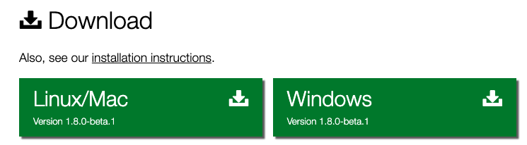

简介
官网：Etherpad is a highly customizable Open Source online editor providing collaborative editing in really real-time.
个人翻译：Etherpad是一款定制、开源的在线编辑器，提供实时协作编辑。
版本

安装
本人实践的机器是阿里云服务器，系统是：1
2
3
4
5
6
7
8
9
10
11
12
13
14
15
16
17
18
19
20
21
22
23[mingliang.gao@VM_0_16_centos ~]$ cat /etc/*release*
CentOS Linux release 7.5.1804 (Core)
Derived from Red Hat Enterprise Linux 7.5 (Source)
NAME="CentOS Linux"
VERSION="7 (Core)"
ID="centos"
ID_LIKE="rhel fedora"
VERSION_ID="7"
PRETTY_NAME="CentOS Linux 7 (Core)"
ANSI_COLOR="0;31"
CPE_NAME="cpe:/o:centos:centos:7"
HOME_URL="https://www.centos.org/"
BUG_REPORT_URL="https://bugs.centos.org/"
CENTOS_MANTISBT_PROJECT="CentOS-7"
CENTOS_MANTISBT_PROJECT_VERSION="7"
REDHAT_SUPPORT_PRODUCT="centos"
REDHAT_SUPPORT_PRODUCT_VERSION="7"
CentOS Linux release 7.5.1804 (Core)
CentOS Linux release 7.5.1804 (Core)
cpe:/o:centos:centos:7
node环境
1 | # 安装 |
依赖包
1 | yum install curl vim gcc-c++ make |
MariaDB数据库安装与配置
安装
1 | yum install mariadb-server |
执行过程略，在安装过程中会让出现root密码等设置，具体请参考文章最后的MariaDB安装与配置，进行下一步启动。
启动
1 | # 开启mariadb数据库 |
首次安装
1 | [root@VM_0_16_centos conf.d]# mysql_secure_installation |
完成初始化设置，主要是root密码的设置最重要。
连接
1 | mysql -h 127.0.0.1 -P 3306 -u root -p |
具体mysql命令怎么使用这里也不做解释，不知道的请自行查资料。
配置
1 | MariaDB [(none)]> CREATE DATABASE etherpad; |
在这里操作是创建etherpad数据库，以及etherpad用户并分配etherpad用户有访问etherpad数据库的权限，用户名：etherpad，密码：123456。
关于数据库、用户、密码自己定义，在etherpad安装与配置中需要用户。
创建linux用户
1 | adduser etherpad |
用户启动使用etherpad程序，我之前没有建立用户，直接用root去启动，会提示：1
2
3[root@VM_0_16_centos opt]# bash /opt/etherpad/etherpad-lite/bin/run.sh
You shouldn't start Etherpad as root!
Please type 'Etherpad rocks my socks' or supply the '--root' argument if you still want to start it as root
也可以在启动的命令后面加上–root进行启动，但是既然etherpad不让用root，那就新建一个就好了。
下载etherpad
1 | su root |
切换etherpad用户，如果没有git命令的用户进行安装，文章最后有相关参考。
把etherpad放在自己想要放的目录。
文件授权 + 所属者
root用户。1
2
3
4
5chmod 755 -R etherpad-lite
chown -R etherpad:etherpad etherpad-lite
# 查看用户名称与组
id 用户
配置文件
创建配置文件
1 | cp ./etherpad-lite/settings.json.template ./etherpad-lite/settings.json |
编辑配置
1 | vim ./etherpad-lite/settings.json |
Ip配置
在配置中搜索0.0.0.0，在文件88行，IP0.0.0.0改成127.0.0.1只能本机访问，完了在用nginx做个反向代理即可，PORT端口改成自己设置的端口，去掉注释，配置更改如下：1
2"ip": "127.0.0.1",
"port": 9002,数据库配置
在配置中搜索dbType，在文件144行，这里用的信息都是在数据库安装配置中设置的配置，写清楚即可，去掉注释，配置更改如下：1
2
3
4
5
6
7
8
9"dbType" : "mysql",
"dbSettings" : {
"user": "etherpad",
"host": "localhost",
"port": 3306,
"password": "123456",
"database": "etherpad",
"charset": "utf8mb4"
},代理配置
trustProxy设置为true。管理员
在配置中搜索password，在文件365行，这里用的信息都是在数据库安装配置中设置的配置，去掉注释，配置更改如下：1
2
3
4
5
6
7
8
9
10
11
12
13
14"users": {
"admin": {
// 1) "password" can be replaced with "hash" if you install ep_hash_auth
// 2) please note that if password is null, the user will not be created
"password": "admin",
"is_admin": true
},
"user": {
// 1) "password" can be replaced with "hash" if you install ep_hash_auth
// 2) please note that if password is null, the user will not be created
"password": "user",
"is_admin": false
}
},
保存配置
1 | :wq |
用哪个都可以，vim保存并退出。
etherpad安装依赖
root用户执行。1
bash ./etherpad-lite/bin/installDeps.sh
安装一下etherpad所需要的依赖包。
npm更新
1
curl -L https://npmjs.com/install.sh | sh
nodejs更新：https://www.cnblogs.com/xiashan17/p/6907537.html
安装n管理工具，进行nodejs版本安装、选择。
安装指定版本node：1
n install node/13.3.0
安装完之后：1
2
3
4installing : node-v13.3.0
mkdir : /usr/local/n/versions/node/13.3.0
fetch : https://nodejs.org/dist/v13.3.0/node-v13.3.0-linux-x64.tar.xz
installed : v13.3.0 (with npm 6.13.1)
处理完以上问题，在重新安装依赖。
启动
etherpad用户。1
./etherpad-lite/bin/run.sh
用etherpad用户直接执行上面命令。1
2
3
4
5
6
7
8
9
10
11
12
13
14
15
16
17
18
19
20
21
22
23
24
25
26
27
28
29[root@localhost ~]#/opt/etherpad/etherpad-lite/bin/run.sh
Ensure that all dependencies are up to date... If this is the first time you have run Etherpad please be patient.
audited 13370 packages in 5.363s
8 packages are looking for funding
run `npm fund` for details
found 5 vulnerabilities (3 low, 2 high)
run `npm audit fix` to fix them, or `npm audit` for details
Clearing minified cache...
Started Etherpad...
[2019-12-28 15:27:21.215] [DEBUG] console - Running on Node v12.14.0 (minimum required Node version: 8.9.0)
[2019-12-28 15:27:21.324] [INFO] console - All relative paths will be interpreted relative to the identified Etherpad base dir: /opt/etherpad/etherpad-lite
[2019-12-28 15:27:21.324] [DEBUG] AbsolutePaths - Relative path "settings.json" can be rewritten to "/opt/etherpad/etherpad-lite/settings.json"
[2019-12-28 15:27:21.325] [DEBUG] AbsolutePaths - Relative path "credentials.json" can be rewritten to "/opt/etherpad/etherpad-lite/credentials.json"
[2019-12-28 15:27:21.331] [INFO] console - settings loaded from: /opt/etherpad/etherpad-lite/settings.json
[2019-12-28 15:27:21.331] [INFO] console - No credentials file found in /opt/etherpad/etherpad-lite/credentials.json. Ignoring.
[2019-12-28 15:27:21.332] [INFO] console - Using skin "colibris" in dir: /opt/etherpad/etherpad-lite/src/static/skins/colibris
[2019-12-28 15:27:21.332] [INFO] console - Session key loaded from: /opt/etherpad/etherpad-lite/SESSIONKEY.txt
[2019-12-28 15:27:21.381] [ERROR] console - (node:25518) [DEP0126] DeprecationWarning: timers.active() is deprecated. Please use timeout.refresh() instead.
[2019-12-28 15:27:21.382] [ERROR] console - (node:25518) [DEP0096] DeprecationWarning: timers.unenroll() is deprecated. Please use clearTimeout instead.
[2019-12-28 15:27:21.831] [INFO] APIHandler - Api key file read from: "/opt/etherpad/etherpad-lite/APIKEY.txt"
[2019-12-28 15:27:22.139] [INFO] console - Installed plugins: ep_align@0.0.24, ep_image_upload@1.0.12
[2019-12-28 15:27:22.142] [INFO] console - Report bugs at https://github.com/ether/etherpad-lite/issues
[2019-12-28 15:27:22.143] [INFO] console - Your Etherpad version is 1.8.0 (5bcc5a3)
[2019-12-28 15:27:22.228] [INFO] console - You can access your Etherpad instance at http://192.168.151.64:9001/
[2019-12-28 15:27:22.228] [INFO] console - The plugin admin page is at http://192.168.151.64:9001/admin/plugins
[2019-12-28 15:27:22.228] [WARN] console - Etherpad is running in Development mode. This mode is slower for users and less secure than production mode. You should set the NODE_ENV environment variable to production by using: export NODE_ENV=production
访问
在浏览器上直接访问：http://IP:PORT，服务器IP + 配置的PORT端口。
常见问题
端口设置
如果在浏览器访问，提示服务不可以用，那么检查一下服务器防火墙问题。
检查端口是否开通
1
2
3
4
5
6
7
8
9
10
11
12
13
14[root@localhost ~]#firewall-cmd --list-all
public (active)
target: default
icmp-block-inversion: no
interfaces: enp3s0
sources:
services: dhcpv6-client mysql ssh
ports: 3306/tcp 8090/tcp 80/tcp 10000/tcp 9001/tcp
protocols:
masquerade: no
forward-ports:
source-ports:
icmp-blocks:
rich rules:开放端口
1
firewall-cmd --zone=public --add-port=9001/tcp --permanent
重启服务
1
systemctl restart firewalld
npm版本
在安装etherpad依赖包或者其他包的时候，有的也许会提示node版本过低，更新下就好，这里推荐用n去更新。
文章最后有相关参考。
etherpad依赖脚本不可执行
如果遇到/opt/www/etherpad/etherpad-lite/bin/run.sh脚本不被执行，那么将脚本改变读、写、执行的权限。1
chmod 777 /opt/www/etherpad/etherpad-lite/bin/run.sh
插件配置
在这里，是主要配置etherpad的插件，有几个还是蛮好用，具体配置在下面有解释，访问Ip:Port/admin，账号密码就是在etherpad配置的那个。
align
作用：文字左、中、右对齐插件。
查找
在搜索出查找align。
安装
搜索到之后进行install安装。
配置
打开Settings找到toolbar，去掉toolbar的注视，在414行添加以下内容：1
[“alignLeft”, “alignCenter”, “alignJustify”, “alignRight”]
结果
image_upload
作用：图片上传功能。
查找
在搜索出查找image。
安装
搜索到之后进行install安装。
配置
打开Settings找到toolbar，在415行添加以下内容：1
2
3
4
5
6
7
8
9
10
11
12
13
14
15
16
17
18
19
20
21
22
23
24
25
26
"toolbar": {
"left": [
["bold", "italic", "underline", "strikethrough"],
["orderedlist", "unorderedlist", "indent", "outdent"],
["undo", "redo"],
["clearauthorship"],
["alignLeft", "alignCenter", "alignJustify", "alignRight"],
["addImage"]
],
"right": [
["importexport", "timeslider", "savedrevision"],
["settings", "embed"],
["showusers"]
],
"timeslider": [
["timeslider_export", "timeslider_returnToPad"]
]
},
"ep_image_upload": {
"fileTypes": ["jpeg","jpg","bmp","gif","png"],
"maxFileSize": 5000000
},
插件根据自己的需求制定。。。。。。结果
额外脚本
我把启动与杀死进程做成了.sh脚本，具体如下：
start
1 | nohup /opt/www/etherpad/etherpad-lite/bin/run.sh>/dev/null 2>&1 & |
end
1 | ps -ef | grep etherpad | grep -v grep | awk -F " " '{print $2}' | xargs kill |
nohub无此命令
1 | # 切换用户 |
nginx域名配置
nginx配置：1
2
3
4
5
6
7
8
9
10
11
12
13
14
15
16
17
18
19
20
21
22
23
24
25
26[root@VM_0_16_centos nginx]# cat /etc/nginx/conf.d/etherpad.conf
server {
listen 9001;
server_name _;
access_log /var/log/nginx/etherpad9001.access.log main;
location / {
proxy_pass http://127.0.0.1:9002/;
proxy_set_header Host $host;
proxy_set_header X-Real-IP $remote_addr;
proxy_set_header X-Real-PORT $remote_port;
proxy_set_header X-Forwarded-For $proxy_add_x_forwarded_for;
}
error_page 404 /error.html;
location = /40x.html {
}
error_page 500 502 503 504 /error.html;
location = /50x.html {
}
}
因为本人的域名还在审核中，这里用ip进行访问。
说明一下：本人的服务器是腾讯云服务器，所以在配置nginx监听的IP是外网IP、端口是9001，在etherpad配置里面配置内网IP以及端口是9002。
测试地址
学习参考
官网：https://etherpad.org/
Github：https://github.com/ether/etherpad-lite
MariaDB安装：https://www.jianshu.com/p/85ad52c88399
Git安装：https://www.jianshu.com/p/f19d1473c3e1
node与npm更新：https://www.jianshu.com/p/2ad99f605499